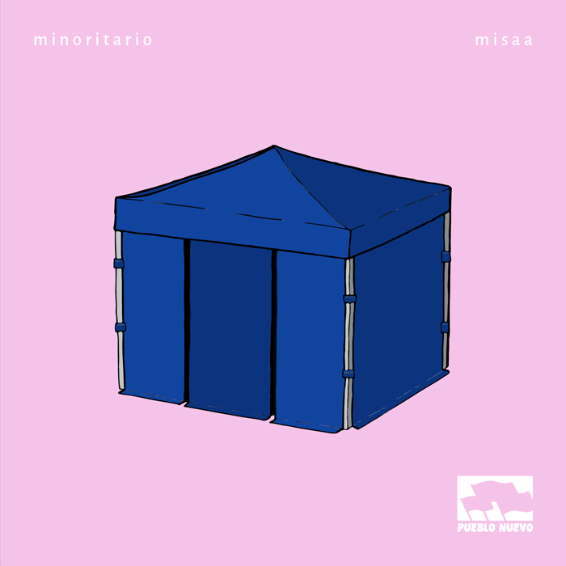
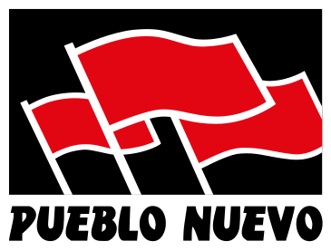
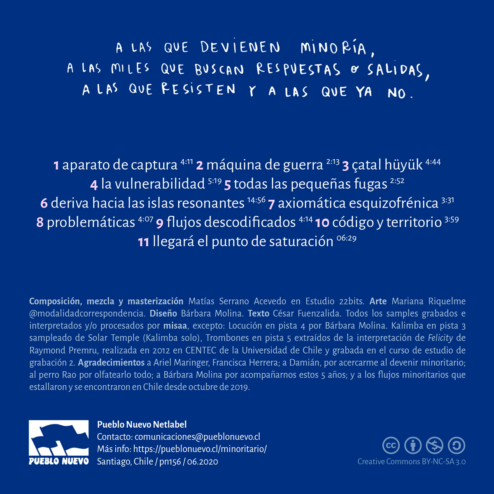

June, 2020


Listen/Details on Pueblo Nuevo NetlabelProduced by misaa
Published through Pueblo Nuevo Netlabel
Artwork by Mariana Riquelme
Design by Bárbara Molina
Review by César Fuenzalida
All samples recorded, performed and/or processed by misaa, except:
Voiceover on track 4 by Bárbara Molina
Kalimba on track 3 sampled from Solar Temple (Kalimba solo)
Trombones on track 5 extracted from the performance of Felicity by Raymond Premru,
performed in 2012 at CENTEC, Universidad de Chile, and recorded in the Recording Studio 2 course
Thanks to Ariel Maringer, Francisca Herrera; to Damián, for introducing me to minority-becoming; to the dog Rao for sniffing everything; to Bárbara Molina for accompanying us these 5 years; and to the minority flows that exploded and found each other in Chile since October 2019.
Sometimes, a tent appears in the hallways of a giant shopping mall, announcing a collective desire to escape. The era of cynicism and sitting in a beach chair believing that nothing would crumble from its foundations is over.
The exercise of power is a pressure (re)cooker. The machinery requires generating suffocation, and smothering every blow struck by the oppressed. It represses with physical and economic violence, and with tons of images alluding to static structures. A category of majority — a common ground, a point of agreement — but fundamentally unattainable and inaccessible in its totality. And there exists a minority counterpart: poor, ugly, violated, spectator of its own minoritization, yet dazed by the dream of being included, some day, by the majority.
But there is a third category — one that neither wants nor needs to keep playing the rules of a game created so that they would lose it. People with defective bodies, physically weak, second-tier genders, depressed, shy and mutant, but who never stop moving. They need to agitate and articulate, to know and see each other, and in doing so they realize they were not so alone, and that they did not need the normality that the repressive images proposed to them. To seek the non-obvious and realize oneself as a constant flow, that agitates and unsettles; questions, speaks and shouts, and whose only way of being completely stopped — killed — is to be condemned to oblivion. Unfortunately, we have a good memory.
"minoritario" is an album that inserts us into a constant intermittence. Brief rhythms and textures that draw a landscape where we are forced to stay alert. The challenge of paying attention and perceiving what surrounds us in a change of decade where we face the challenge of living daily with uncertainty. Musical pieces that announce the arrival of a moment that never quite becomes present, and at the same time the challenge of confronting what surrounds us in order to continue our constant march.

Made by Mauro Melo
Color grading by Alex Fox
Footage:
Ultra High Definition views of Planet Earth captured by ©NASA astronaut Jeff Williams during
his mission on the International Space Station in 2016
Ultra High Definition views of the Moon by ©NASA's Scientific Visualization Studio.
Ultra High Definition views of Mercury and the Sun by ©NASA's Goddard Space Flight Center.
"Lo que existe dentro de la carpa" – Ciudad Sonora
"Ruido #12" (Podcast) – El Ruido es el Mensaje
MISAA INTERVIÚ :. Islas Resonantes – Perú Avantgarde